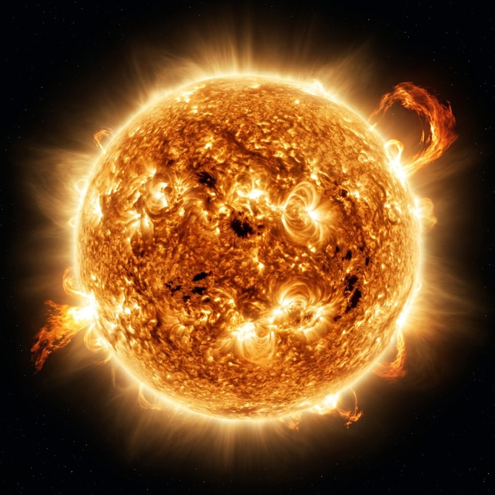
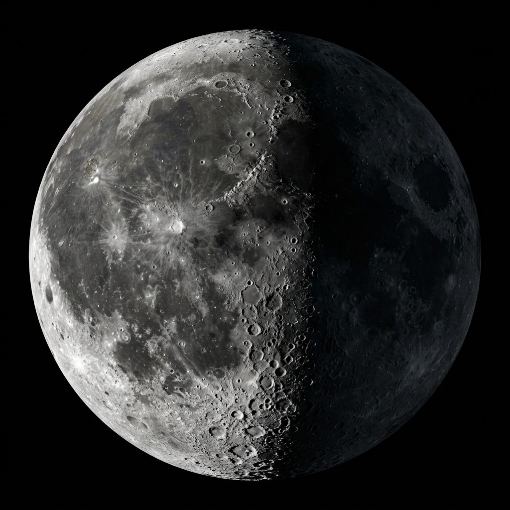
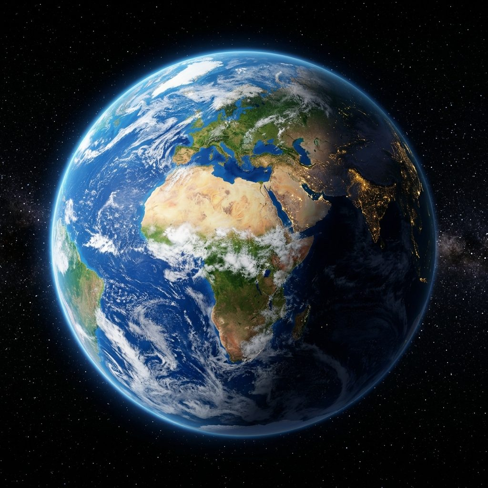
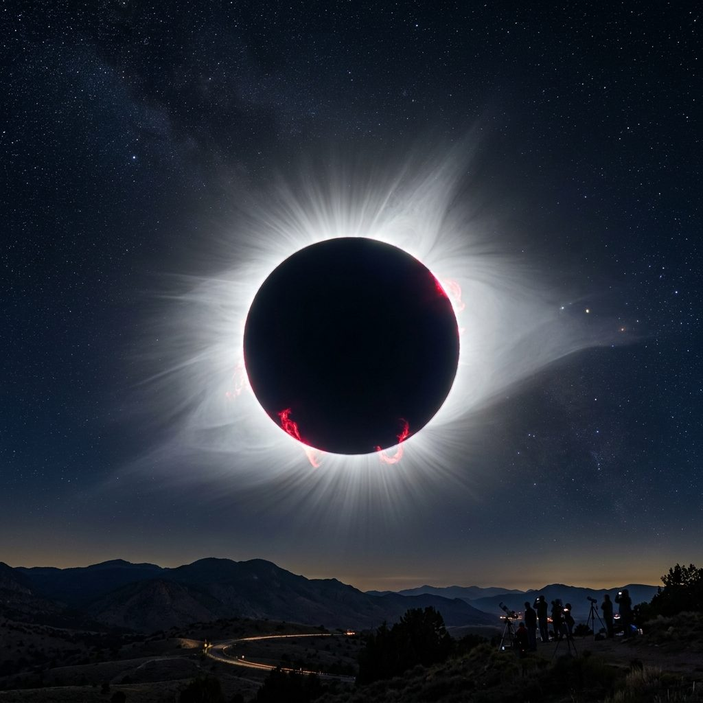
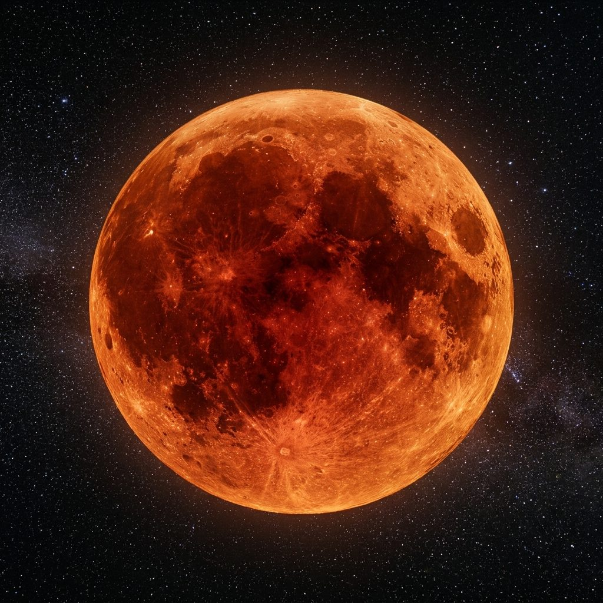

← Retour
🌑 Les Éclipses de Soleil et de Lune ☀️
Schémas, simulation interactive et quiz (10 questions)
🔬 Visualisation Scientifique
☀️ Éclipse Solaire
🌕 Éclipse Lunaire
📐 Inclinaison (5°)
Modèle : Éclipse Solaire
🪐
Animation Réaliste
📋
Schéma Scientifique



Vue depuis la Terre


🎛️ Déplacer la Lune sur sa trajectoire :
Alignement parfait
Haut / Décalé
Bas / Décalé
Question 1 sur 10
Score : 0 / 10
Chargement de la question...
Question suivante
👉
🏆
Enquête terminée !
⭐⭐⭐⭐⭐
10 / 10
Impressionnant ! Tu as compris tous les secrets astronomiques des éclipses de Soleil et de Lune !
🔄
Recommencer l'Enquête